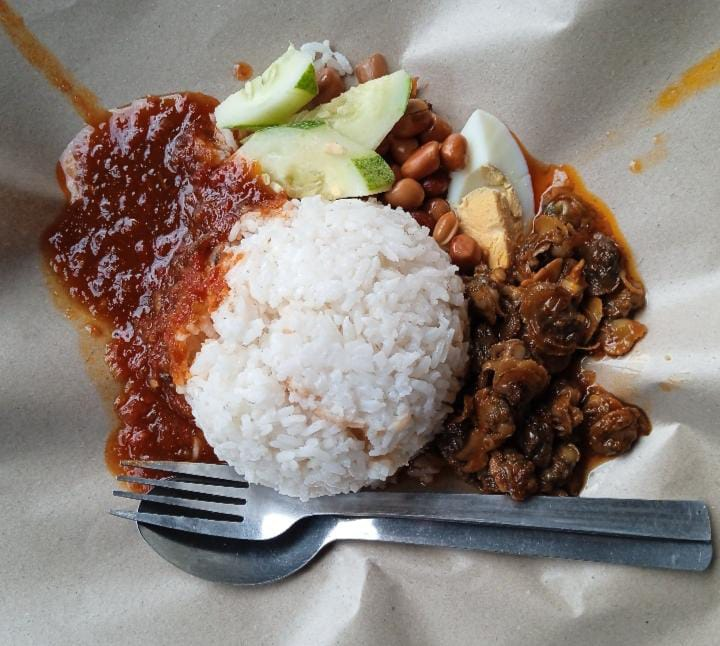
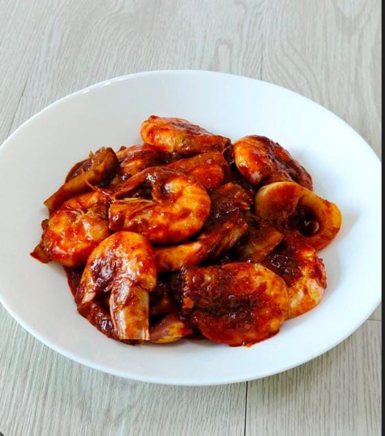
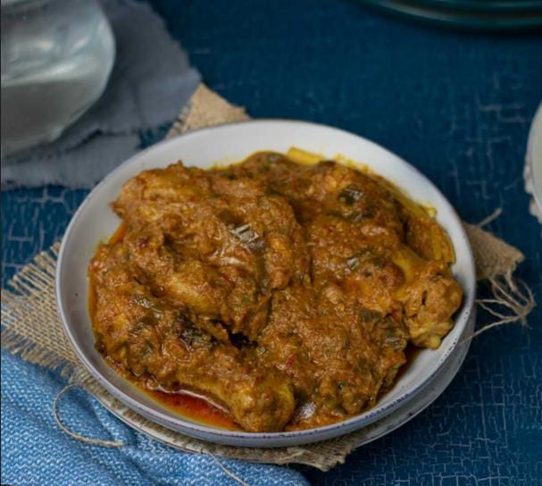
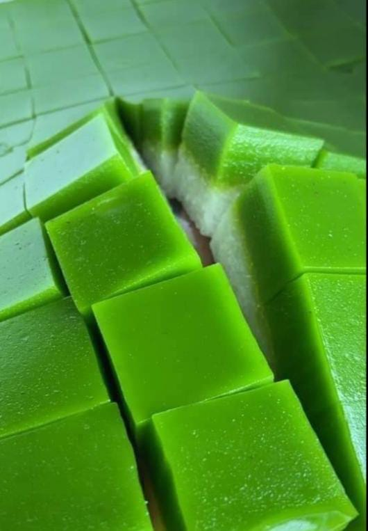
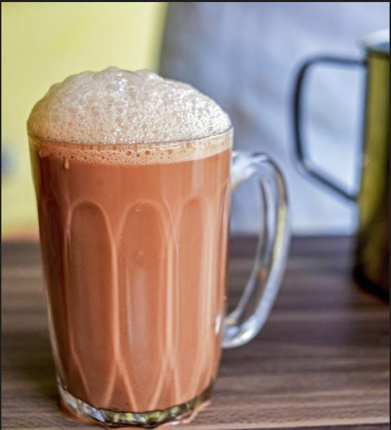

Welcome to Rumah Rasa!
We believe every Malaysian family holds treasured recipes passed down through generations. At Rumah Rasa, we share our family’s heritage dishes — from Nasi Lemak to delicate Kuih Seri Muka.
Featured Recipes

Nasi Lemak
Malaysia’s iconic coconut rice dish, served with spicy sambal, crispy anchovies, peanuts, egg, and cucumber.

Sambal Udang
Fiery prawns cooked in aromatic chili-petai sambal — a bold and unforgettable flavor.

Rendang Ayam
Tender chicken slow-cooked in coconut milk and spices until rich, dry, and deeply flavorful.

Kuih Seri Muka
A traditional two-layered kuih: green pandan glutinous rice base topped with creamy coconut custard.

Teh Tarik
Malaysia’s beloved “pulled” tea — smooth, frothy, and perfectly sweetened with condensed milk.
Have a family recipe to share? Visit our Feedback page!